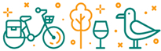

L'Eurovélo, 217.4 Km à vélo à travers les Hauts de France
Les deux sections françaises cumulées de l'EuroVelo 5 sont longues d'environ 713 km. La première traverse les Hauts-de-France, de Calais à Wattrelos et la deuxième le Grand Est de Sarreguemines à Saint-Louis. Dans les Hauts-de-France, l'EV 5 traverse sur près de 235 km les pays traditionnel de l'Artois et des Flandres. Elle démarre au terminal de ferry de Calais et croise l'EuroVelo 4, puis traverse Calais et rejoint Coulogne en longeant le canal de Calais à Saint-Omer. Ensuite l'itinéraire emprunte une voie verte jusqu'à Guînes, puis rejoint Ardres en empruntant quelques sections de l'ancienne ligne de chemin de fer d'Anvin à Calais. À Watten, l'EV 5 utilise le chemin de halage de l’Aa canalisée jusqu'à Saint-Omer, puis en grande partie celui du canal de Neufossé jusqu'à Aire-sur-la-Lys et enfin longe la Lys jusqu'à Saint-Venant. , La véloroute emprunte à partir de Robecq le chemin de halage du canal d’Aire à La Bassée avant d’atteindre Béthune. Depuis Béthune, l'EuroVelo 5 se dirige vers Lens via Bruay-la-Buissière et le Parc d'Ohlain1, et rejoint la véloroute du Bassin Minier ainsi que la véloroute du Nord. L'EV 5 fait itinéraire commun avec ces deux dernières jusqu'à Lille. Enfin à Marquette-lez-Lille, l'EuroVelo 5 quitte la véloroute du Nord et bifurque en direction de Marcq-en-Barœul, Wasquehal, Tourcoing, Roubaix et la frontière belge à Wattrelos, en empruntant le chemin de halage du canal de Roubaix.
